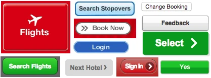
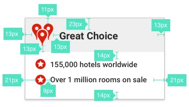
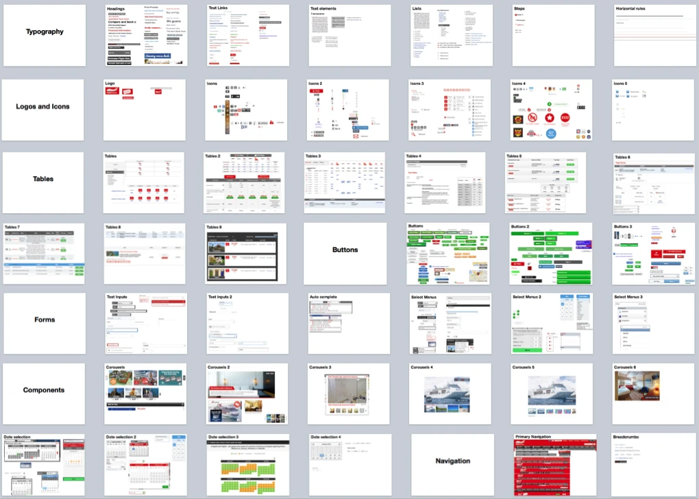
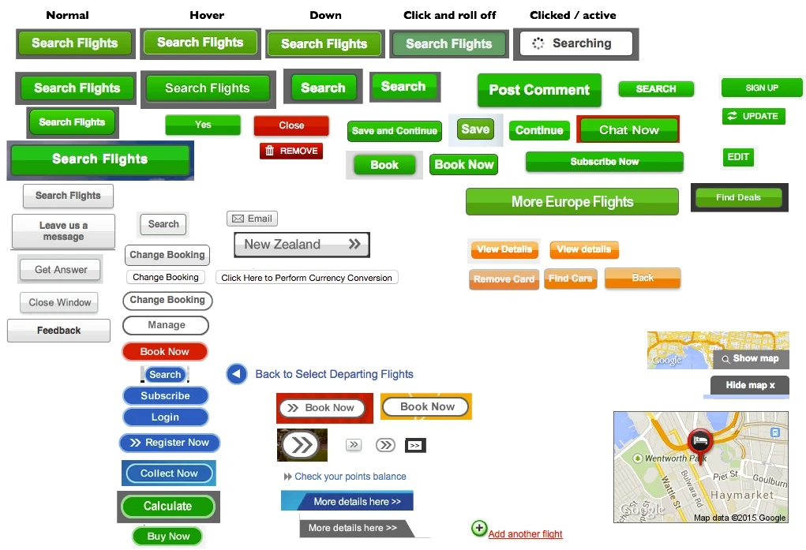
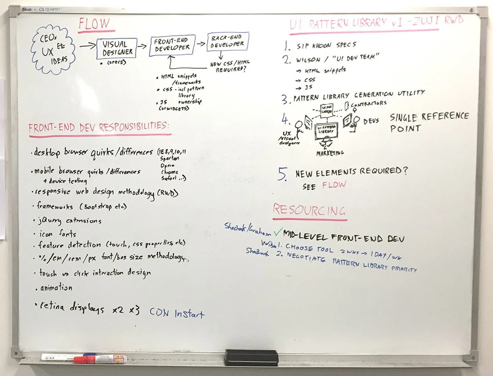
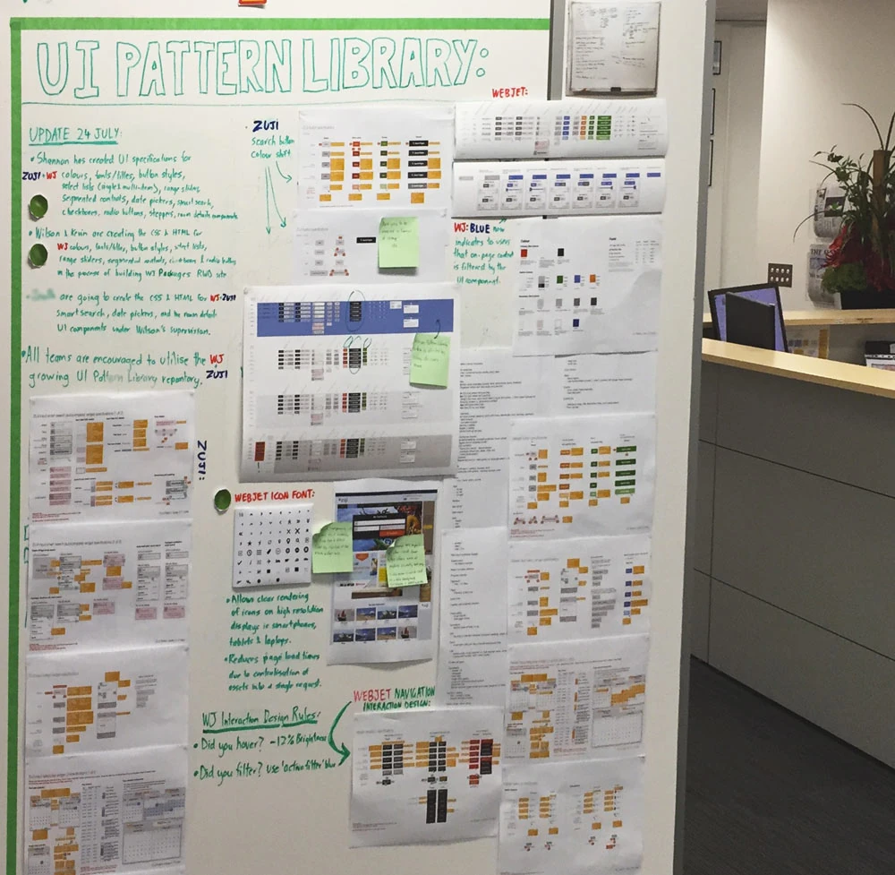
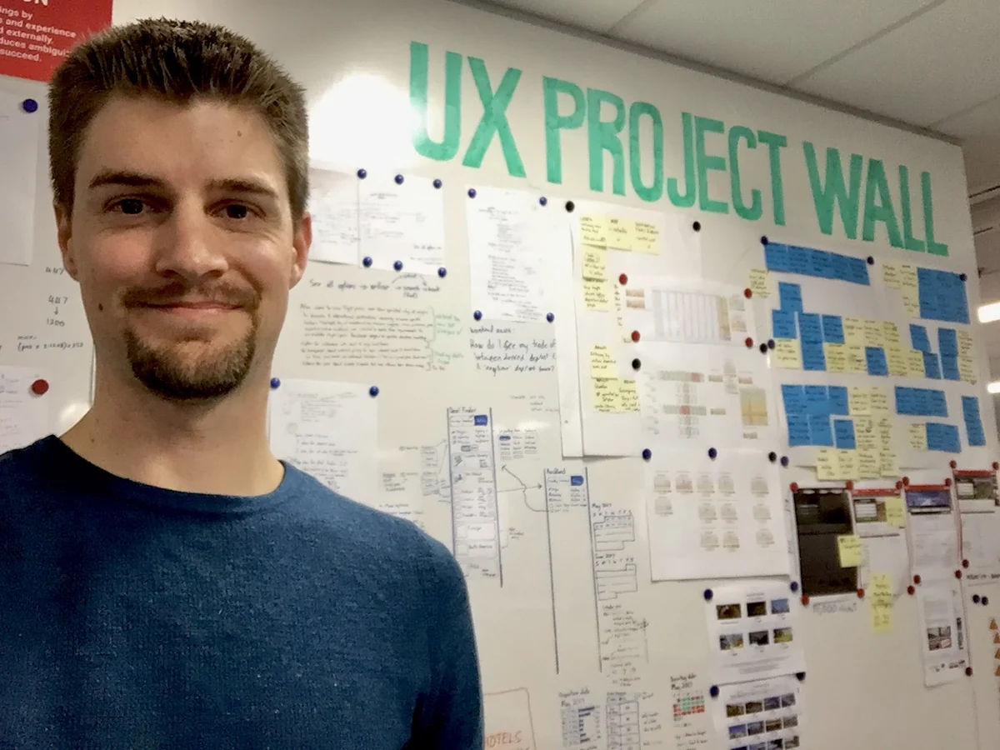

Case study 03 · Webjet (ASX:WEB)
Founding a design system nobody had budgeted for
Two brands, four countries, seven products, fifteen years of accumulated UI drift and no design standards at all. Getting a pattern library built turned out to be an argument about resourcing, ownership and workflow — not about buttons.
What I walked into
In early 2015 I joined Webjet as their first in-house UX designer. At that point the business ran two brands in four countries and sold seven distinct products. Smartphone customers were served by a mix of independent mobile sites, responsive sites and a native iOS app — each built at a different time, sometimes by a different team, and never with an in-house designer across them.
Fifteen years of design trends had left their marks on the interface. Buttons appeared across the properties with 3D bevels, gradients, thick solid borders, drop shadows — a small archaeology of whatever had been fashionable when that page shipped.

That inconsistency wasn’t a cosmetic complaint. It eroded brand trust, reduced the learnability of the interface, and cost customers time — the “consistency and standards” heuristic is on every usability list for good reason.
Then my first UX project got approved, and the development team asked me for full design specifications. Button colours. Hover states. Text colours. Paragraph margins. Every value, every time, because there were no standards for anyone to refer to.

The problem under the problem
There was a resourcing issue nobody had named. Front-end work was regularly being implemented by experienced back-end developers with surface-level front-end knowledge. Give two of them the same specification and you got two visibly different results — which meant almost nothing was reusable, and the codebase got harder to maintain with every release. No amount of better specification writing was going to fix that.
Making it undeniable: the UI inventory
I needed the scale of the problem in a form every stakeholder could grasp in one look — marketing, engineering leads, product owners. So I built a UI inventory, which is a deliberately unsophisticated technique:
- Open a blank slide deck.
- Browse the sites as a customer would. Screenshot every new or different UI element you meet.
- Group the screenshots into categories.
That’s it. The output does the arguing for you. Nobody defends thirty-one button styles once they’re on one slide together.


Decision: show, don’t advocate
I could have written a business case with efficiency estimates and heuristic citations. It would have been read by two people and questioned by both. An artefact that lets stakeholders reach the conclusion themselves converts far better than an argument that asks them to accept mine — and it costs a day to make.
Buy-in, and the four questions that mattered
With the need accepted, the discussion moved to how — and a tool with this much organisational reach can’t be answered by a designer alone. I ran a workshop with the lead developers, marketing, the product owners, the visual designer, and the most front-end-capable developer in the existing team. Four questions on the board:
- Do we agree to establish a UI Pattern Library?
- What is the formal workflow for UI design and implementation?
- Do we need a dedicated front-end team?
- Who owns the library?

The workflow we landed on:
- All UI elements are designed by a Visual Designer, who provides specifications to the (yet to exist) Front-End Team.
- The Front-End Team writes the HTML snippets, CSS and JavaScript, and places them in a centralised, organised, well-commented GitHub repository — the UI Pattern Library.
- Back-end developers consume that pre-written front-end code rather than writing their own.
- If a project slips past the Front-End Team, the back-end developers liaise with them to create or refine the pattern, pulling in a Visual Designer where needed.
And ownership, which is the question that quietly decides whether a design system survives its founder: visual design sat with the Visual Designer in close collaboration with the Head of Marketing; the repository sat with our most front-end-capable developer, who would go on to lead the new team.
Decision: don’t keep it
I founded the library and I deliberately did not own it. Handing the repository to a developer who wanted it — and who would be measured on it — meant adoption stopped depending on me chasing people. Design systems that live in the design team’s custody tend to be treated as the design team’s preference. Ones that live in engineering’s custody get treated as infrastructure.
Arguing a front-end team into existence
The workflow needed people who didn’t exist yet. Rather than assert that front-end is a specialisation, I wrote out what a front-end-focused developer actually has to stay current on, and let the engineering leads compare it against a back-end developer’s concerns:
- Desktop cross-browser and cross-platform quirks — IE, Safari, Firefox, Chrome, Opera
- Smartphone cross-browser and cross-platform quirks
- Responsive methodology — breakpoints, media queries
- Frameworks such as Bootstrap
- JavaScript library extension and authoring
- Icon font implementation
- Feature detection — touch, CSS property support
- Font and box sizing methodology — %, em, rem, px
- Touch versus cursor interaction design
- Animation
- Retina image strategy
Few back-end developers are masters of all of that, and the field moves constantly. Put on one list, the case makes itself: this is a discipline, not a task. The leads agreed it was worth building an internal specialisation around, and started recruiting for the new Front-End Team.
Why I could make that argument
I’d spent ten years as the person doing all eleven of those things. That list was credible because it was written by someone engineering knew had lived it — not by a designer describing a job they’d never held. Technical credibility isn’t a nice-to-have in a conversation about headcount.
Getting it started without prioritisation
Agreement is not a roadmap slot. It became clear that establishing a pattern library and rolling it out across two brands and seven products was never going to outrank existing project commitments.
So we didn’t ask it to. We piggybacked an existing UI-heavy project — the Hotels website re-platforming — and standardised exactly one element. Buttons.
Decision: one element, inside funded work
A design system that needs its own budget line competes with revenue features and loses. A design system delivered as a by-product of work already approved costs nobody anything to say yes to. Buttons were the right first element because they’re everywhere, they’re visually obvious, and getting them right proves the whole pipeline — design, code, documentation, consumption — end to end at low risk.
Design, code, documentation
Design. Following our own new workflow, I specified a standard button suite covering every use case and state it would appear in, with touch targets and accessibility as first-order constraints rather than a later audit. We assessed the design languages of the day — skeuomorphism, flat design, Google Material — on usability grounds specifically, and settled on a treatment that balanced looking clickable against staying simple: flat colour with enough affordance to read as interactive.

Front-end. The team chose to write styles as independent LESS files rather than inherit the all-in-one-stylesheet legacy they’d been handed, compiled and minified for production. A small decision that made the difference between a library and another monolith.
Documentation. Two audiences with different needs: marketing and visual designers had to see built elements in context before approving them for production; developers needed to know when and how to use each one. Our lead front-end developer settled on Hologram, which reads the LESS as written and generates structured documentation from markdown alongside it. We hosted it on Azure to get it online fast.

Consumption. The GitHub repository let internal developers and third parties pull the latest patterns into their own projects, read the implementation notes in the live library, and copy the HTML — later extended with Bower and snippets tailored for React.
Making adoption the easy path
With the pipeline proved on buttons, we grew it the same way we’d started it: by adding whatever elements the currently funded projects needed. Over several months that became standardised headings, form elements, modals, tooltips, accordions and more.
I also commandeered the wall beside the office’s main entrance and turned the state of the pattern library into something everyone walked past twice a day. Not decoration — an invitation. It surfaced what existed, what was coming, and who to talk to.


In mid-2016 we replaced hand-written specifications with Sketch Measure, generating interactive specs automatically. That cut the time spent preparing work for developers, the time spent updating specs after design changes, and — most valuably — the margin for error in interpreting them.
The tipping point
Within about six months, developers were reaching for the library by default — not because a policy told them to, but because it was faster than reinventing the UI for each new task. That is the only adoption mechanism I’ve seen hold once the person who championed it stops pushing.
Outcomes
- A dedicated front-end team funded and recruited, with clear ownership of the library.
- Default adoption inside six months, on speed rather than mandate.
- A vehicle for raising the whole team’s front-end standard. We used the centralised model to teach the broader development team how to handle things like retina iconography and imagery, retiring older methodologies as we went.
- The legacy stylesheet finally got refactored. The multi-brand, multi-channel stylesheet had gone untouched for years — unprioritised, and genuinely frightening to change. A centralised library gave the front-end team a safe surface to work from, so they could start unpicking it.
- Brand and customer experience became manageable. Legacy styles phased out as the team worked through customer-facing systems, and consistency became something you could change centrally rather than negotiate project by project.
- It outlived me. The work was documented publicly on the Webjet blog in January 2017, and its direct descendant — a React component library begun in 2020 — is still published and in use.
It also made the next few years of design work faster. Every project after this one — including the paired flight modal and the mobile purchase path — started from conformant components, which meant no specification debate on the standard elements and prototypes that were buildable as drawn.
What I learned
Five things I took from this
- A design system is an operating-model change wearing a component library’s clothes. The buttons took a week. The workflow, the ownership question and the headcount case took months, and they were the parts that determined whether any of it lasted.
- Artefacts persuade better than arguments. One slide of thirty-odd button styles moved the conversation further than any business case I could have written, and it took a day.
- Don’t hold the keys. Giving ownership to a developer who wanted it made the library infrastructure instead of a design-team preference. That decision is why it survived my departure — and why a version of it is still shipping.
- Ride funded work. Anything that needs its own budget line competes with revenue features and loses. Delivered as a by-product of approved work, it costs nobody a decision.
- Adoption follows convenience, not policy. The library won when it became the fastest route to done. Any adoption strategy that relies on people choosing the virtuous option over the quick one is running on the champion’s attention, and expires with it.